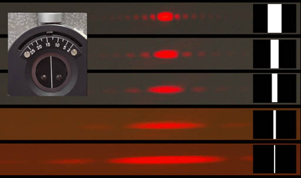

Single Slit Diffraction for Different Slit Widths

These single slit diffraction patterns were photographed with a helium-neon laser as the light source and a micrometer-controlled single slit. The sketches of the slit widths at right were scaled to the difference between the first minima of the diffraction patterns. If the geometry is such that the
small angle approximation is valid, the width of the pattern is inversely proportional to the slit width.
|
Index
Diffraction concepts
Fraunhofer diffraction |